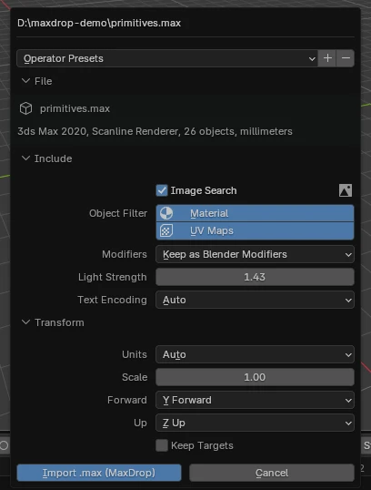
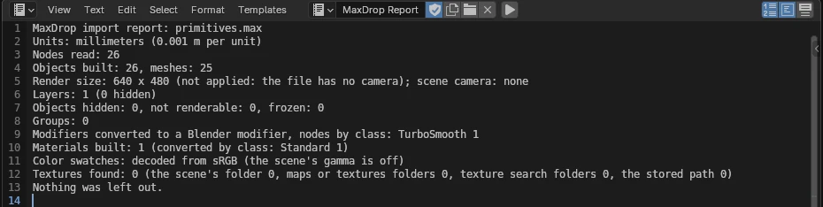

Tiện ích mở rộng Blender · phần mềm tự do
MaxDrop
Thả tệp 3ds Max .max vào Blender để nhận lưới, vật liệu, đèn và camera của cảnh, hoặc đưa cho nó tệp .zip, .rar hay .7z chứa cảnh. Không cần cài 3ds Max.
Kéo nút này vào một cửa sổ Blender đang mở. Cách hoạt động
Dự án độc lập: không liên kết với Autodesk hay Chaos và không được họ bảo trợ.
Phiên bản {{version}}: ổn định, chưa đầy đủ
MaxDrop là một nhánh (fork) của trình nhập miễn phí io_scene_max. MaxDrop đọc cảnh và vật liệu bằng bộ đọc riêng, kể cả từ gói cảnh mà nó được tải về; trình phân tích tệp của io_scene_max đã được bỏ.
Nó nhập lưới có thể chỉnh sửa cùng UV, nhóm làm mịn, instance, phân cấp, layer và đơn vị cảnh, phần vỏ phòng (shape, Extrude, UVW Map), chín primitive tiêu chuẩn, vật liệu V-Ray, Corona, Standard và Physical cùng các texture map, và cả đèn lẫn camera: một cảnh nội thất V-Ray được thả vào sẽ mở qua chính camera của nó, chiếu sáng bằng chính đèn của nó. Xem danh sách đầy đủ.
Khi nhập có hiển thị tiến trình và có thể nhấn Esc để hủy. Phần lớn modifier chưa được áp dụng và một số đèn, map được đơn giản hóa. Bản cập nhật đến ngay trong Blender.
Cài đặt
Hãy cài từ kho (repository) này, theo một trong hai cách dưới đây, để Blender có thể cập nhật về sau.
Bằng kéo thả Nhanh nhất
- Khi Blender đang mở, kéo MaxDrop {{version}} (hoặc nút lớn ở trên) vào cửa sổ Blender.
- Lần đầu, Blender báo tiện ích đến từ một kho chưa biết. Bấm Add Repository…, đánh dấu Check for Updates on Startup, rồi bấm Create.
- Kéo nút vào Blender lần nữa và bấm OK để cài. Nếu Blender hỏi, chọn Allow Online Access.
Bằng URL của kho
- Trong Blender, mở Edit › Preferences › Get Extensions, rồi Repositories › + › Add Remote Repository.
- Dán URL này, đánh dấu Check for Updates on Startup và bấm Create:
{{repo_url}} - Tìm MaxDrop trong Get Extensions và bấm Install.
Đừng dùng Install from Disk
Blender không bao giờ cập nhật bản được cài từ tệp zip đã tải về. Nếu bạn đã cài theo cách đó, hãy gỡ ra và cài lại như trên.
Chỉ dành cho máy không có internet: {{zip_name}} ({{size}}). Bạn sẽ phải tự cập nhật bản đó.
Phiên bản {{version}} nhập được gì
Danh sách trung thực cho bản phát hành này. Trang hỗ trợ trên GitHub (tiếng Anh) có đủ mọi chi tiết và được cập nhật theo từng phiên bản.
Vào được Blender
- Editable Mesh và Editable Poly: đỉnh, mặt, material ID, kênh UV, nhóm làm mịn (smoothing group), và các instance thành lưới dùng chung.
- Primitive (Box, Plane, Pyramid, Sphere, GeoSphere, Cylinder, Cone, Tube, Torus) thành đúng lưới mà 3ds Max dựng từ tham số của chúng.
- Shape (Line, Editable Spline, Rectangle, Circle…) thành curve, và Extrude trên shape thành lưới của nó: tường, sàn và trần vẽ dạng đường viền được nhập vào ở dạng khép kín.
- UVW Map (planar, box, cylindrical, spherical) áp vào kênh map của nó; TurboSmooth, MeshSmooth, Shell và Symmetry được giữ lại thành modifier của Blender.
- Vị trí, góc xoay, tỉ lệ và toàn bộ phân cấp của các đối tượng; group và helper Dummy thành empty.
- Đơn vị cảnh: cảnh lưu bằng milimét, centimét, inch hay feet được nhập đúng kích thước thật.
- Layer thành collection, kèm các cờ ẩn, đóng băng (frozen) và không render.
- Vật liệu, dưới dạng Principled BSDF với các map thành node (lặp, dịch, xoay, cắt, Mix, Color Correction, Falloff, Composite, normal map và bump map): VRayMtl cùng các vật liệu và wrapper V-Ray khác, Standard, Physical, Multi/Sub-Object, CoronaPhysicalMtl, CoronaMtl, CoronaLightMtl và CoronaLayeredMtl.
- Texture là tệp ảnh thường, nằm cạnh tệp
.max, trong thư mụcmapshaytexturesbên cạnh, hoặc trong các thư mục bạn thêm ở phần preferences. - Đèn và camera: đèn V-Ray dạng plane, disc và sphere, đèn standard và photometric, VRaySun và VRayIES, sáng đúng như V-Ray render; camera Free, Target, Physical và VRayPhysicalCamera với khung hình của 3ds Max, và camera mà tệp dùng để render trở thành camera của cảnh.
Chưa nhập được
- Một số đèn: đèn Corona, đèn mesh và dome của V-Ray, sky và Skylight, phân bố IES (thành một đèn spot rộng).
- Các modifier khác (Edit Poly, Edit Mesh, FFD, Noise…): đối tượng được nhập ở trạng thái trước các modifier đó.
- Teapot, primitive bị cắt lát (slice) và bán cầu: được nhập thành empty cho đến một phiên bản sau.
- Star, Text, Helix, Donut và curve NURBS.
- Hoạt ảnh: đối tượng được nhập như ở khung hình 0.
- Map thủ tục (Noise, Gradient, VRayDirt…): đơn giản hóa thành ảnh bên dưới, hoặc kênh giữ màu đơn sắc.
- Vật liệu khác (Arnold Standard Surface, Raytrace, Architectural, Corona Volume and Slicer…): một vật liệu xám giữ nguyên tên.
- Proxy, hạt (particle), tóc và xương.
Cách dùng
Không có bảng điều khiển riêng: MaxDrop thêm một trình nhập.
.rar của một gói cảnh: MaxDrop tìm thấy cảnh đã được giải nén trước đó bên cạnh và nhập từ đó..rar đó được kéo từ File Explorer vào 3D Viewport: hộp tùy chọn ghi tên cảnh trong gói, các tệp texture và thư mục mà nó đã được giải nén vào..max đã giải nén, được chọn trong File › Import › MaxDrop.Quay trong Blender 5.2 với một cảnh có 2.353 đối tượng. Đây là cảnh mua: nội dung được làm mờ từ lúc bắt đầu nhập, và quá trình nhập được tua nhanh.
Nhập một cảnh
- Kéo tệp
.maxtừ trình quản lý tệp vào 3D Viewport của Blender, hoặc chọn File › Import › MaxDrop (.max, .zip, .rar, .7z). - Kiểm tra các tùy chọn. Units: Auto lấy đơn vị mà cảnh được lưu, nên cảnh có đúng kích thước thật.
- Bấm Import. Cảnh lớn cần một lúc: thanh trạng thái hiển thị tiến trình, và Esc hủy quá trình nhập, xóa những gì nó đã tạo.
- Văn bản MaxDrop Report trong Text Editor liệt kê những gì đã vào và chưa vào. Nó cũng cho biết vật liệu ra sao: được chuyển đổi, được đơn giản hóa, và các texture không tìm thấy.
Gói cảnh cũng dùng được: chọn tệp .zip, .rar hay .7z trong File › Import, hoặc thả tệp .rar hay .7z. MaxDrop giải nén cảnh cùng các map nó dùng vào một thư mục mang tên tệp nén, nằm cạnh tệp đó, rồi nhập từ đó. Không gì khác trong gói được ghi ra hay chạy.

Các tùy chọn
- Scene chọn tệp
.maxcần nhập khi gói chứa nhiều tệp. - Image Search tìm texture cả trong các thư mục con của thư mục cảnh.
- Object Filter chọn có nhập vật liệu và UV map hay không.
- Modifiers giữ TurboSmooth, MeshSmooth, Shell và Symmetry thành modifier của Blender, hoặc bỏ qua chúng.
- Light Strength nhân độ sáng của mọi đèn; giá trị mặc định làm Cycles sáng như V-Ray. Keep Targets hướng camera và đèn có target vào target của chúng bằng ràng buộc Track To.
- Units ghi đè đơn vị của tệp (milimét, centimét, mét, inch, feet); Scale là hệ số nhân thêm; Forward và Up xoay cảnh.
- Text Encoding chọn bảng mã cho tên trong tệp của 3ds Max 2012 trở về trước; tệp của 3ds Max 2013 trở đi bỏ qua tùy chọn này.
- Mỗi lần nhập tạo một collection mang tên tệp, với một collection cho mỗi layer của 3ds Max.

Texture
Tệp .max ghi tên các tệp texture nhưng không chứa chúng. MaxDrop tìm từng tên tệp trong thư mục của cảnh, rồi trong thư mục maps hay textures bên cạnh, rồi trong Texture Search Folders của phần preferences, và cuối cùng ở đường dẫn lưu trong cảnh, chỉ khi nó nằm trên ổ đĩa cục bộ.
Đường dẫn mạng hay đường dẫn thiết bị lưu trong cảnh không bao giờ được mở. Texture không tìm thấy thì bị bỏ qua: vật liệu giữ màu của nó.
Cùng với io_scene_max
MaxDrop có thể bật cùng lúc với trình nhập mà nó bắt nguồn từ đó. Khi ấy, lúc bạn thả tệp .max, Blender sẽ hỏi dùng trình nào: chọn MaxDrop (.max, .rar, .7z).
Cập nhật
Khi đã đánh dấu Check for Updates on Startup, Blender đề xuất phiên bản mới trong Get Extensions.
Hoặc bấm Check for Updates trong Preferences › Add-ons › MaxDrop: phiên bản mới hơn được cài ngay.
Khắc phục sự cố
Vẫn gặp vấn đề? Mở một issue kèm phiên bản Blender và văn bản MaxDrop Report từ Text Editor (hoặc cửa sổ console của hệ thống).
Blender báo tiện ích đến từ một kho chưa biết
Đó là lần thả đầu tiên đang làm đúng việc của nó. Bấm Add Repository…, đánh dấu Check for Updates on Startup, bấm Create, rồi kéo nút vào Blender thêm một lần để cài.
Cảnh nhập vào quá to, hoặc quá nhỏ
Với Units: Auto, MaxDrop dùng đơn vị mà tệp được lưu. Nếu cảnh được dựng theo một đơn vị khác, hãy nhập lại và chọn đơn vị đó trong Units; Scale là hệ số nhân thêm và nên để 1.
Thiếu đối tượng, hoặc căn phòng không có tường
Modifier mà MaxDrop không áp dụng (Edit Poly, Edit Mesh, FFD…) để lại đối tượng như ở bên dưới modifier đó; tường vẽ dạng đường viền có Extrude được nhập ở dạng khép kín. Xem những gì phiên bản này nhập được. Đối tượng MaxDrop không chuyển đổi được sẽ thành empty, giữ nguyên vị trí trong phân cấp.
Vật liệu không có texture
Đặt các tệp texture vào thư mục của tệp .max, vào thư mục maps hay textures bên cạnh, hoặc thêm thư mục của chúng vào Texture Search Folders trong preferences của MaxDrop. Image Search tìm cả trong các thư mục con của thư mục cảnh. Mix, Color Correction, Falloff, Composite và normal map được nhập thành node; các map thủ tục khác (Noise, Gradient, VRayDirt…) được đơn giản hóa thành ảnh bên dưới, và kênh không có ảnh bên dưới giữ màu đơn sắc.
Thả tệp .zip lại mở trình cài tiện ích của Blender
Blender coi mọi tệp .zip được thả vào là một tiện ích cần cài, trước khi hỏi bất kỳ trình nhập nào. Hãy chọn tệp .zip trong File › Import › MaxDrop; tệp .rar hay .7z thì thả vào được.
Không đọc được tệp .rar hay .7z
MaxDrop giải nén bằng một chương trình có sẵn trên máy bạn và không tự mang theo chương trình nào: UnRAR (cài cùng WinRAR), 7-Zip, hoặc bsdtar bản mới (lệnh tar của Windows 11 đã cập nhật, và của macOS). Hãy cài một trong số đó, hoặc tự giải nén rồi nhập tệp .max. Tệp nén có mật khẩu hay bị chia thành nhiều phần thì không đọc được.
“Online access is off”
Chỉ Check for Updates mới kết nối mạng. Hãy cho phép trong Edit › Preferences › System › Network › Allow Online Access. Việc nhập vẫn hoạt động khi không có quyền này.
“This copy was installed from disk, so Blender cannot update it”
Gỡ nó trong Preferences › Add-ons, rồi cài lại từ trang này.
Giới thiệu
Công cụ miễn phí cho những ai nhận cảnh .max và làm việc trong Blender.
Ghi công
MaxDrop là một nhánh của io_scene_max của Sebastian Schrand, vốn dựa trên Importer3D của Jens M. Plonka và olefile của Philippe Lagadec. Việc đọc tệp .max mà không cần 3ds Max là công sức của họ.
Độc lập
MaxDrop không liên kết với Autodesk hay Chaos, không được họ bảo trợ hay hỗ trợ. Autodesk và 3ds Max là nhãn hiệu của Autodesk, Inc.; V-Ray và Corona là nhãn hiệu của Chaos. Các tên này chỉ được dùng để nói tệp và vật liệu nào được đọc.
Quyền riêng tư
Trình nhập đọc tệp bạn đưa cho nó và các texture bên cạnh, trên máy của bạn; với gói cảnh, nó ghi cảnh và các map vào một thư mục cạnh tệp nén. Tiện ích chỉ kết nối mạng cho một việc, khi bạn bấm Check for Updates: nó đọc danh sách phiên bản của trang này. Không thu thập dữ liệu sử dụng (telemetry), không cần tài khoản.
Mã nguồn mở
Phần mềm tự do theo Giấy phép Công cộng GNU (GNU General Public License), phiên bản 3 hoặc (tùy bạn chọn) bất kỳ phiên bản nào mới hơn; văn bản giấy phép (tiếng Anh) có trong gói tải về. Mã nguồn, nhật ký thay đổi và các bản phát hành có trên GitHub; lỗi và ý tưởng xin gửi vào trình theo dõi issue.